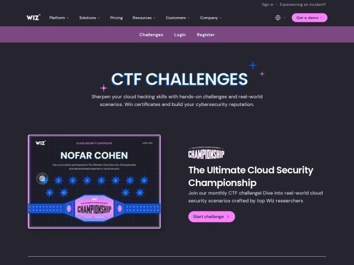

Not sure where to start? Begin with our cloud security overview or the learning roadmap to find the right challenges for your level. Stuck on terminology like SSRF, IMDSv2, or OIDC? Use the cloud security glossary. To see how these techniques play out in real attacks, read the breach kill chains.
About This Collection
CTF challenges are one of the best ways to build real cloud security intuition. This page collects free and open-source challenges covering the major cloud providers, Kubernetes, identity, AI/LLM safety, CI/CD, and incident response. Difficulty ranges from beginner-friendly browser challenges to multi-stage vulnerable environments you deploy in your own cloud account. They pair naturally with the cloud penetration testing guide: CTFs build the intuition, that guide covers the methodology and tooling.
Know of a CTF we're missing? See how to contribute
or run python3 tools/submit_ctf.py.

Beginner CTFs aren’t about winning - they’re about getting comfortable in the cloud console while a clock is ticking. - the actual point of the easy ones
How to Approach CTFs (Especially If You're Nervous)
If the idea of jumping into a CTF makes you anxious, you're in good company - most people feel that way the first time, and plenty still feel it on challenge ten. CTFs are designed to be harder than your day job. Getting stuck is the point; that's where the learning happens. Nobody is watching your screen, the timer is yours to ignore, and "did not solve" is not on your performance review.
Reframe what success looks like
The win isn't the flag - it's the new thing you understand on the other side. A CTF where you read the writeup at level 2 and walk away knowing how IMDS works is more valuable than one you brute-forced without learning anything. Treat each challenge as a guided tour of a technique, not a test of whether you're "good enough."
Practical tips for getting unstuck
- Start small and browser-based. Pick something with no account and no deployment - flAWS, The Big IAM Challenge, or K8s LAN Party are forgiving on-ramps. Save the Terraform-deployed environments for after you've built some confidence.
- Time-box each level. Give yourself 30-60 minutes of honest effort before peeking at hints. Past that, you're not learning more by staring - you're just burning out.
- Read the writeup, then re-do it. Once you've read how someone else solved it, close the tab and reproduce the steps yourself. The second pass is where the technique sticks.
- Take notes as you go. A scratch file with commands you ran, errors you saw, and what eventually worked turns each CTF into a personal reference you'll actually use later.
- Ignore the leaderboard. Speed and rank reward people who've already seen the trick. If you're learning, your competition is yesterday-you.
- Bring a friend. Pair up, or bring a stuck challenge to one of our weekly Zoom sessions. Talking through what you've tried almost always shakes loose the next idea.
What "failure" actually looks like
You will hit walls. You will misread a policy, mistype a curl command, and spend an hour chasing a typo. You will read a writeup and think "I never would have figured that out." All of that is normal - it's how every cloud security practitioner you respect got where they are. The only real failure mode is not starting. So pick one challenge from the list below and give it 30 minutes. That's it.
Wiz Cloud Security Championship
Disclosure: the site's author works at Wiz. Wiz challenges appear here because they are free, well-built and widely worked through, not because of that affiliation - no vendor paid for or reviewed this page. Every other platform on this page is listed on the same terms.
A 12-month series of cloud security challenges from Wiz research that ran June 2025 - May 2026. Points vary by difficulty; track your score on the Championship leaderboard.

Perimeter Leak
Extract secrets from a hardened AWS data perimeter. 10 points.

Contain Me If You Can
Escape the container and extract the flag from the host filesystem. 20 points.

Breaking The Barriers
Exploit OAuth and Entra ID misconfigurations to reach restricted resources. 10 points.

Needle in a Haystack
Use recon techniques to uncover hidden infrastructure and extract sensitive data. 20 points.

Game of Pods
Escalate privileges in Kubernetes and capture the flag. 30 points.

Malware Busters!
Reverse the malware and extract the flag. 10 points.

State of Affairs
Exploit Terraform automation running inside a container to extract the flag. 20 points.

Confession Booth
A "safe space" for hackers. What could go wrong? 30 points.

Trust Issues
Investigate a breach and uncover how company data was exfiltrated. 20 points.

Happy Birthday
Celebrate S3's 20th birthday by finding the hidden present. 20 points.

Split Horizon
Reach an isolated workload in a locked-down Kubernetes cluster using only DNS and node metadata. 30 points.

Glass House
The CTF platform itself was open-sourced - exploit a real-world CI/CD pipeline flaw to mark the challenge solved. 50 points.
Wiz Standalone Challenges
Always-available Wiz CTFs outside the monthly Championship.

Wiz CTF Portal
Central hub for all Wiz CTF challenges, with leaderboards and progress tracking.

EKS Cluster Games
Start inside a vulnerable EKS pod; exploit misconfigurations to capture flags.

The Big IAM Challenge
AWS IAM privilege escalation and permission boundaries. Browser-based, no AWS account.

K8s LAN Party
Network misconfigurations and vulnerabilities in a Kubernetes cluster, with leaderboard.

The Cloud Hunting Games
Incident-response CTF: investigate a suspicious breach at a fictional startup.

The Prompt Airlines AI Security Challenge
Exploit prompt injection and AI logic flaws to get a free flight from a chatbot.
AWS CTFs

flAWS
Original six-level AWS CTF teaching common misconfigurations. Browser-based.

flAWS2
Serverless-focused AWS CTF with both Attacker and Defender tracks.

CloudGoat
Deliberately vulnerable AWS deployment for learning cloud penetration testing.

IAM Vulnerable
31 AWS IAM privilege-escalation attack paths, deployed via Terraform.

CloudFoxable
Vulnerable AWS scenarios designed to be enumerated with the CloudFox tool.

ServerlessGoat
OWASP project with a deliberately vulnerable AWS Lambda app.

Damn Vulnerable Cloud Application
Intentionally vulnerable AWS application for learning privilege-escalation techniques.

AWSGoat
Vulnerable-by-design AWS infrastructure with OWASP Top 10 flaws and multiple escalation paths, deployed via Terraform.

CfnGoat
Vulnerable-by-design CloudFormation template for learning to catch insecure AWS IaC.

CDKGoat
Vulnerable-by-design AWS CDK application for practicing insecure-IaC detection.
Azure CTFs

BadZure
Deliberately vulnerable Azure and Entra ID environment for learning identity attacks.

EntraGoat
Six vulnerable Entra ID attack-path scenarios with documented solutions.

CONVEX
Modular Azure CTFs you deploy into your own tenant with create/teardown scripts.

AzureGoat
Vulnerable-by-design Azure infrastructure spanning Functions, CosmosDB, Storage, and identities, deployed via Terraform.

XMGoat
Five Terraform-deployed modules for practicing Azure and Entra ID attack paths and privilege escalation.

Broken Azure
Always-online broken-by-design Azure environment; capture flags in the browser or self-host via Terraform.
GCP CTFs


⎈ Kubernetes CTFs

OWASP EKS Goat
20+ attack-defense labs on AWS EKS covering RBAC, IAM, and pod breakouts.

Kubernetes Goat
Interactive Kubernetes security learning platform for GKE, EKS, AKS, or local K3S.

Bust a Kube
Offline VMware VMs with vulnerable Kubernetes clusters for local practice.

Kube Security Lab
14 vulnerable Kubernetes cluster configs deployable locally via Docker + Kind.

ControlPlane Simulator
CTF-style Kubernetes security scenarios deployed to your own AWS account, including the CNCF scenario set.
Multi-Cloud CTFs


AI, Secrets, and CI/CD CTFs

AIGoat
Deliberately vulnerable AI infrastructure for learning AI/ML security.

OWASP Wrong Secrets
40+ challenges on secrets management anti-patterns across AWS, GCP, Azure.

CICDont
Deliberately vulnerable CI/CD pipeline for learning DevSecOps.

Gandalf: Agent Breaker
Gamified prompt-injection challenge against vulnerable agent apps: poisoned data, hijacked objectives, tool abuse. Browser-based.

Crucible
Hosted AI red-teaming CTF with many ML and LLM challenges: prompt injection, evasion, extraction, and more.

Damn Vulnerable MCP Server
Ten challenges against insecure MCP servers: tool poisoning, prompt injection, rug pulls, and other agent-tooling attacks.

CI/CD Goat
Eleven challenges against a full vulnerable CI/CD stack covering the Top 10 CI/CD security risks. Runs in Docker.

GitHub Actions Goat
Deliberately vulnerable GitHub Actions workflows with guided threat scenarios for learning pipeline security.
Contribute a CTF
Found a cloud CTF we haven't listed? Open a pull request or use our submission tool:
python3 tools/submit_ctf.pySee the CTF contribution guide for details on the card format, sections, tags, and the submission script.